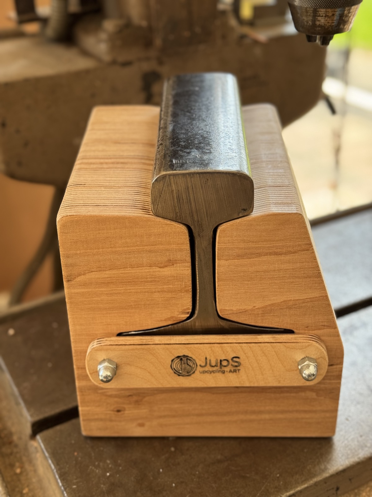
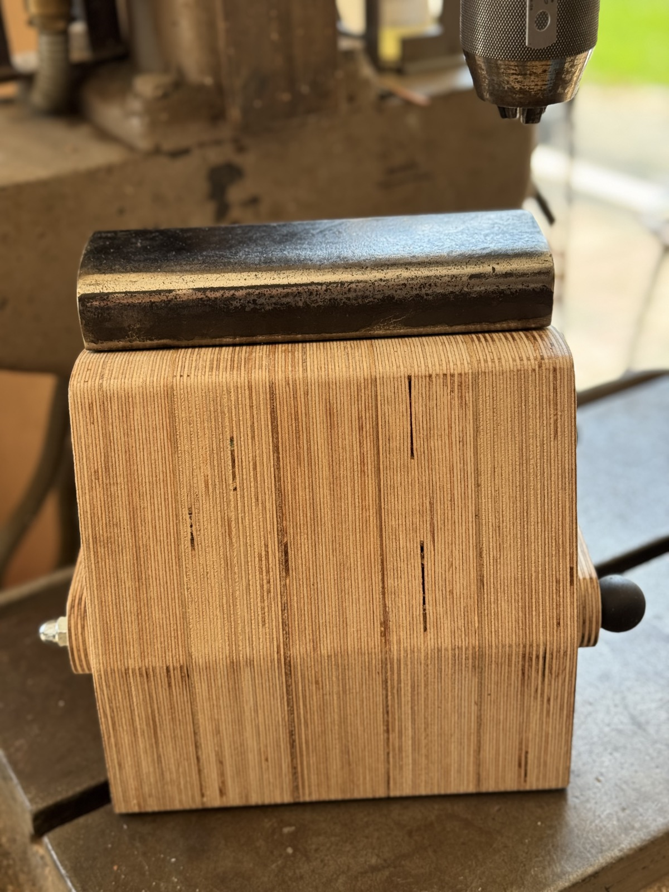
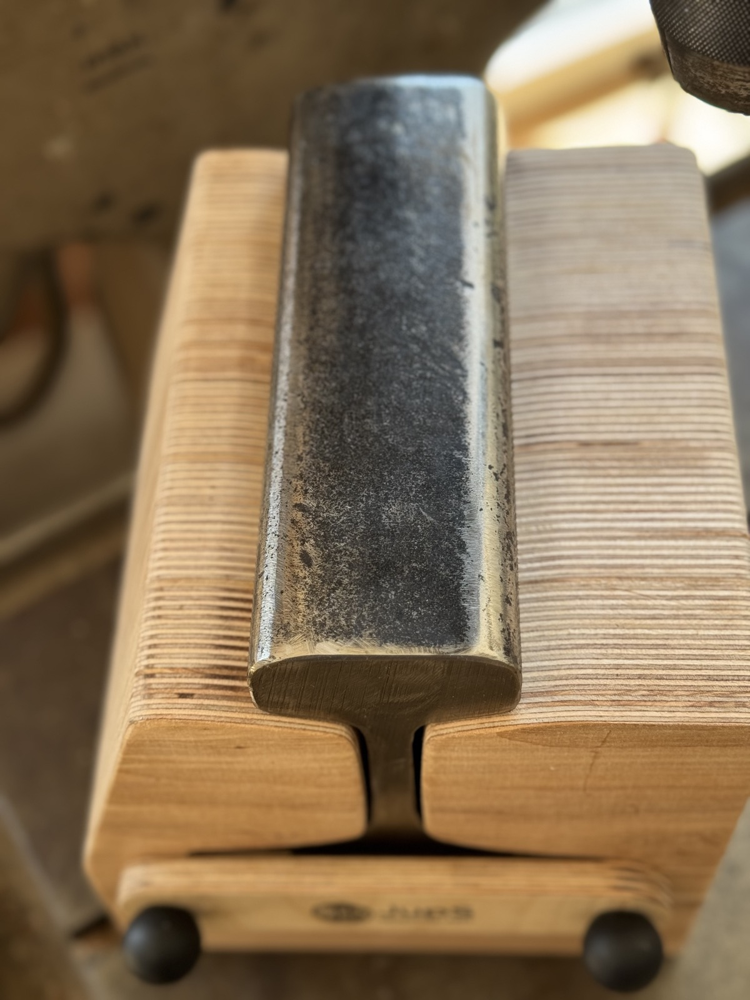
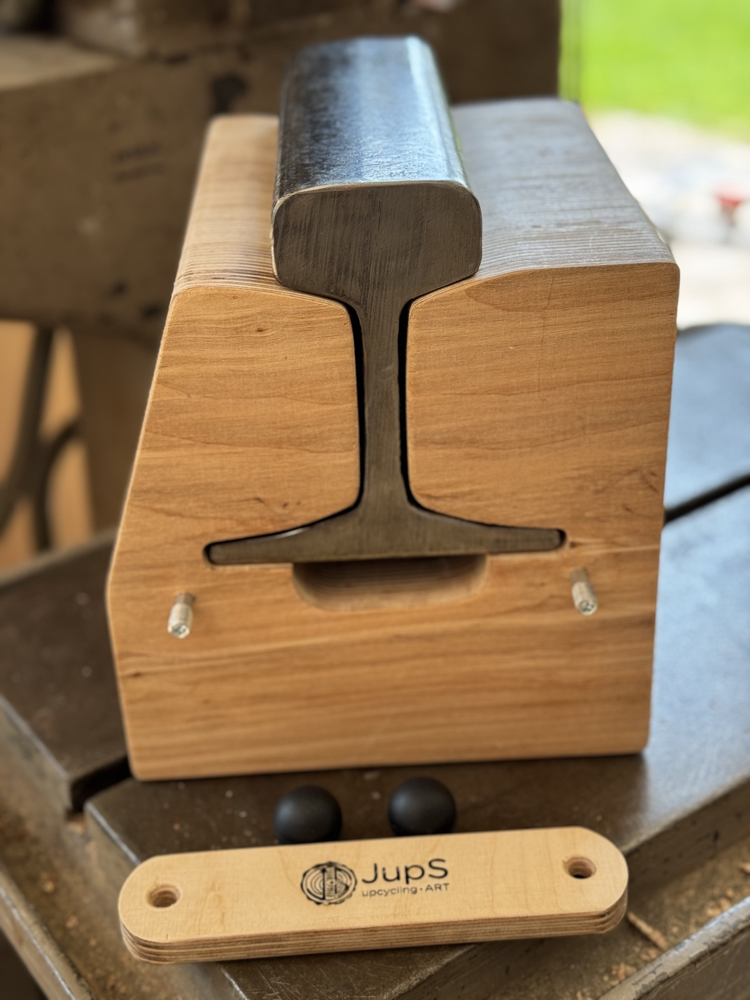

Amboss · Handgefertigtes Unikat
229 €
Inkl. Versand innerhalb der EU. Preis inkl. MwSt.; aufgrund des Kleinunternehmerstatus wird gemäß § 19 UStG die MwSt. in der Rechnung nicht ausgewiesen.
oder direkt an jups.upcycling@gmail.com
Amboss aus einer originalen Eisenbahnschiene, über die schon Züge gerollt sind – verarbeitet in einem aufwändig gefertigten Gehäuse aus verleimten Birkenholz-Multiplexplatten (gewachst, nicht lackiert).
Die Schiene lässt sich nach Entfernen der seitlichen Begrenzungsplatten um 180° wenden: So nutzen Sie wahlweise die plane Fläche oder die abgerundete Schienen-Lauffläche.
Der Amboss eignet sich für kleinere Schlag- und Formarbeiten – nicht zum Schmieden schwerer Teile mit großen Hämmern.
Handgefertigtes Unikat: Kleine „Schönheitsfehler" sind möglich. Holz ist ein Naturprodukt – Farbunterschiede sind keine Qualitätsmängel.
Pflegetipp: Holz und Eisenbahnschiene gelegentlich leicht nachölen.